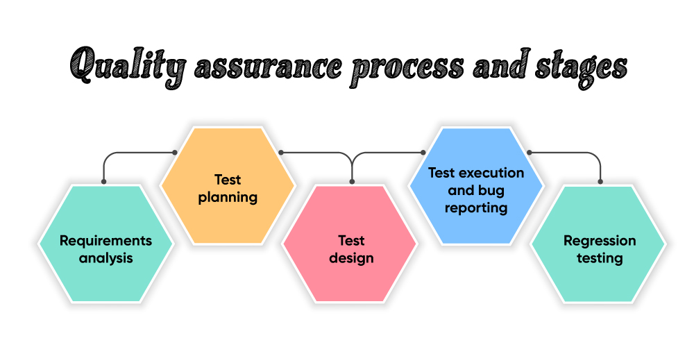
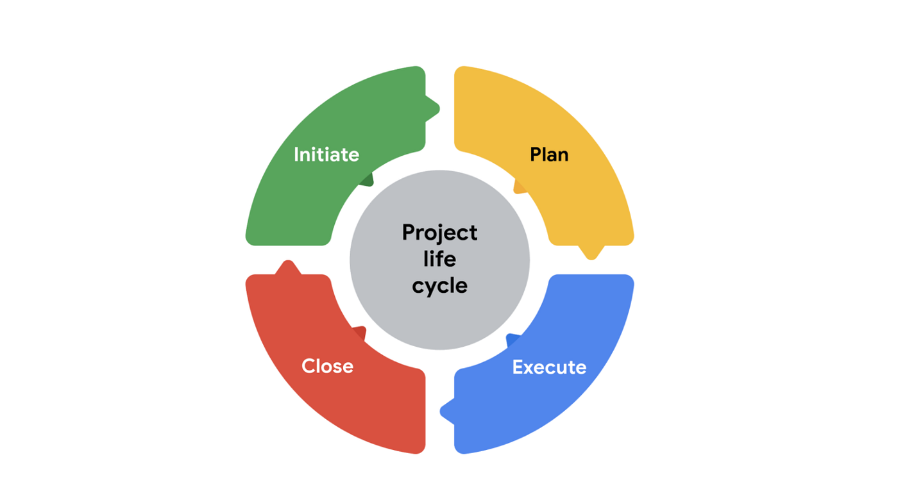

What is this quality assurance? Listen carefully
Quality Assurance (QA) is a systematic process used to ensure that a product or service meets specified requirements and standards. In the context of software development, QA involves the activities and practices that monitor the production process to improve and maintain the quality of software products.


SEE THE DIFFERENCE BETWEEN THESE TWO IMAGES?
Quality assurance helps a company create products and services that meet the needs, expectations and requirements of customers. It yields high-quality product offerings that build trust and loyalty with customers. The standards and procedures defined by a quality assurance program help prevent product defects before they arise.
Before going to the topic, you should know what is quality.
Take this for example
Suppose you go to a hotel, in a normal hotel and you want to have tea or coffee, the price will be very affordable to you, right?
It will be very cheap right?
But at the same time if you are going to a five star hotel for the same tea, you have to pay more than that.

What is the difference?
The difference is related to quality only
The quality of the product used in that tea. Regarding the milk and the sugar and the tea powder and regarding the service, regarding the atmosphere, everything will be different in five star hotel.
So the price will also will be different.
What is the difference?
Quality
They are giving quality. Simple!! Quality is the meeting need of the customer both internally and externally.
You can define quality assurance as a systematic effort to maintain satisfactory performance.
For example, a systematic effort is maintained by starlink to give best internet kuliko Safaricom. You see this is? QUALITY
Quality Assurance Steps
Just look at this image and you will understand
If you didn't get that use this one below you will understand properly

Imagine yourself as a Quality assurance officer you will better understand this concept. Your work is to check kama vitu ziko sawa, you tick boxes, you send out your analysis. It's all about checking the quality.
So these are the steps:
- Planning: Defining standards, tools, and methodologies that will guide the QA process.
- Documentation: Writing test plans, test cases, and setting up procedures.
- Designing Tests: Based on specifications, testers create cases that will be executed to check functionality and performance.
- Execution: Testers run the planned tests and document results.
- Analysis: Results are analyzed to identify trends, root causes of defects, or areas for improvement.
- Reporting: Issues and improvements are communicated to the relevant stakeholders.
- Verification and Validation: Ensuring that the final product meets the original requirements (validation) and adheres to the predefined processes (verification).
After the steps we need to see how to manage project quality.(kumanage project ikuwe ya kishua)
Let's first see the importance
- Customer Satisfaction: Projects must meet customer requirements to ensure satisfaction.
- Risk Mitigation: Identifying risks early helps in reducing the chances of defects and rework.
- Cost Savings: Fewer defects lead to cost reduction by minimizing rework and enhancing project efficiency.
- Reputation: Delivering high-quality outcomes boosts the organization’s credibility and trust in the market.
These are the main importances unafaa ushike(mind my language)
Now let's look at project management life cycle (yani the stages from point A to B)

Mambo ni manne
INITIATE
PLAN
EXECUTE
CLOSE
Tools and Techniques for Managing Quality
- Quality Checklists: Lists used to verify all necessary quality steps are completed.
- Statistical Sampling: Using statistical methods to assess quality and identify improvement areas.
- Benchmarking: Comparing your project or company’s performance to industry standards.
The next ones I'm going to state are the major techniques that are used universally for managing quality. GET ABOUT 5 AND RESEARCH ABOUT THEM
- Cause-and-Effect Diagram (Ishikawa / Fishbone Diagram)
Purpose: Identifies the root causes of quality problems by analyzing potential factors contributing to defects or issues.
How It Works: Lists major categories (e.g., people, machines, methods, materials) and maps out potential causes of a quality issue under each category.
- Pareto Analysis
Purpose: Helps prioritize quality problems based on their impact, following the 80/20 rule (80% of problems come from 20% of causes).
How It Works: Uses a bar chart to focus efforts on the most significant issues to maximize improvement.
- Control Charts
Purpose: Monitors process performance over time and identifies any variations outside control limits.
How It Works: Plots data points over time, with upper and lower control limits indicating acceptable variations. Points outside these limits signal potential issues.
- Failure Mode and Effects Analysis (FMEA)
Purpose: Identifies potential failure modes in a process and their effects to prioritize preventive measures.
How It Works: Evaluates risks by assessing the severity, occurrence, and detectability of possible failures, calculating a risk priority number (RPN).
- Statistical Process Control (SPC)
Purpose: Uses statistical methods to monitor and control processes, ensuring consistent quality.
How It Works: Employs tools like control charts to track process performance and reduce variability.
- Statistical Process Control (SPC)
Purpose: Uses statistical methods to monitor and control processes, ensuring consistent quality.
How It Works: Employs tools like control charts to track process performance and reduce variability.
- Six Sigma
Purpose: Focuses on reducing defects and variability in processes to improve quality.
How It Works: Uses the DMAIC methodology (Define, Measure, Analyze, Improve, Control) to systematically improve processes by eliminating defects.
I have another abbreviation for you that can help you cheza na hii
Mambo ni manne
INITIATE
PLAN
EXECUTE
CLOSE
-
Purpose: Identifies the root causes of quality problems by analyzing potential factors contributing to defects or issues.
How It Works: Lists major categories (e.g., people, machines, methods, materials) and maps out potential causes of a quality issue under each category.
-
Purpose: Helps prioritize quality problems based on their impact, following the 80/20 rule (80% of problems come from 20% of causes).
How It Works: Uses a bar chart to focus efforts on the most significant issues to maximize improvement.
-
Purpose: Monitors process performance over time and identifies any variations outside control limits.
How It Works: Plots data points over time, with upper and lower control limits indicating acceptable variations. Points outside these limits signal potential issues.
-
Purpose: Identifies potential failure modes in a process and their effects to prioritize preventive measures.
How It Works: Evaluates risks by assessing the severity, occurrence, and detectability of possible failures, calculating a risk priority number (RPN).
-
Purpose: Uses statistical methods to monitor and control processes, ensuring consistent quality.
How It Works: Employs tools like control charts to track process performance and reduce variability.
-
Purpose: Uses statistical methods to monitor and control processes, ensuring consistent quality.
How It Works: Employs tools like control charts to track process performance and reduce variability.
-
Purpose: Focuses on reducing defects and variability in processes to improve quality.
How It Works: Uses the DMAIC methodology (Define, Measure, Analyze, Improve, Control) to systematically improve processes by eliminating defects.
SMART Quality Standards
- Specific: Clearly defined quality objectives.
- Measurable: Metrics that allow for quality to be assessed objectively.
- Achievable: Goals should be realistic.
- Relevant: Aligned with organizational goals.
- Time-bound: With clear deadlines or milestones.